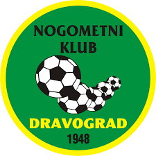

💚 Moj nogometni klub
Dobrodošli na spletni strani mojega nogometnega kluba, NK Dravograd!

Nogomet je več kot igra. Je ekipni duh, prijateljstvo, vztrajnost in borba za vsak gol!
📜 Zgodovina kluba
Nogometni klub Dravograd ima bogato zgodovino, ki sega v leto 1948. Klub je skozi leta dosegel pomembne uspehe, vključno z uvrstitvijo v 1. slovensko nogometno ligo leta 1999.
Naša zgodovina se začne leta
1948
Pomemben mejnik je bila uvrstitev v prvo ligo leta 1999.
🌐 Obišči naš klub na spletu
Za več informacij, novice in druge vsebine obišči uradno spletno stran NK Dravograd.
Obišči NK Dravograd →